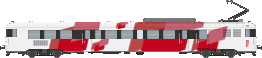

Z 7100

Automotrices Z 7100 récupérées en fin de carrière chez la SNCF. Modernisées avec une nouvelle livrée aux couleurs des CFP, aménagement intérieur rénové et rétablissement des deux cabines de conduite (l'une était condamnée suite à la dernière grande révision générale de la SNCF), elles constituent le socle du parc initial de la compagnie, en attendant l'acquisition de matériel plus récent.